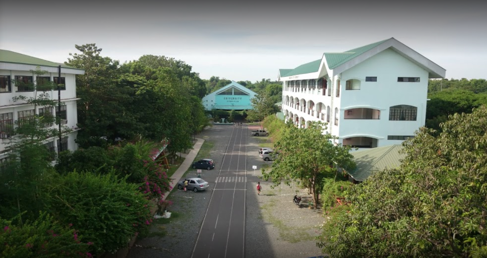
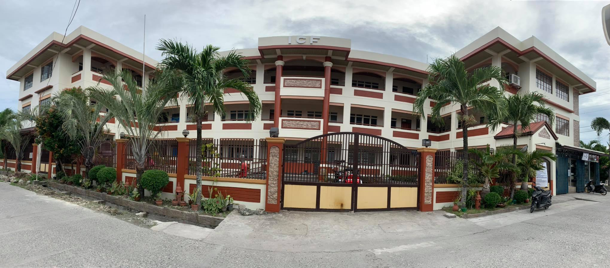
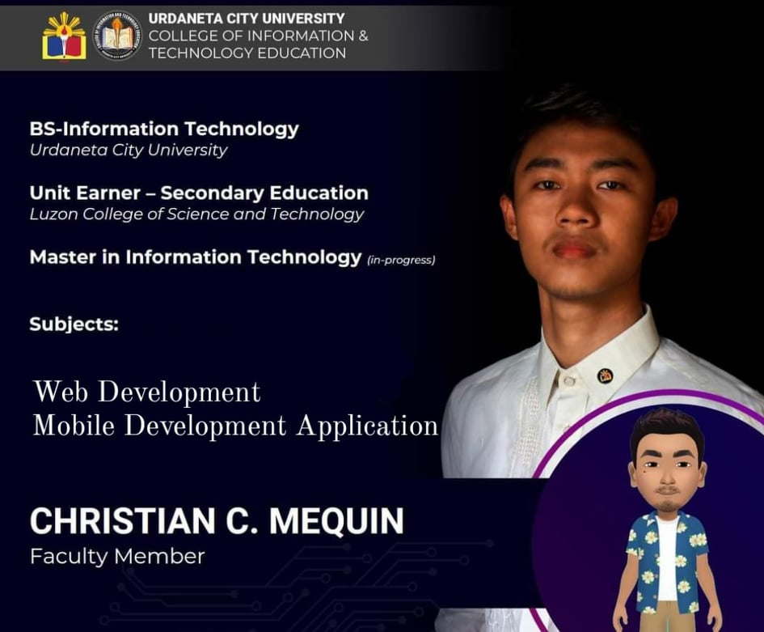
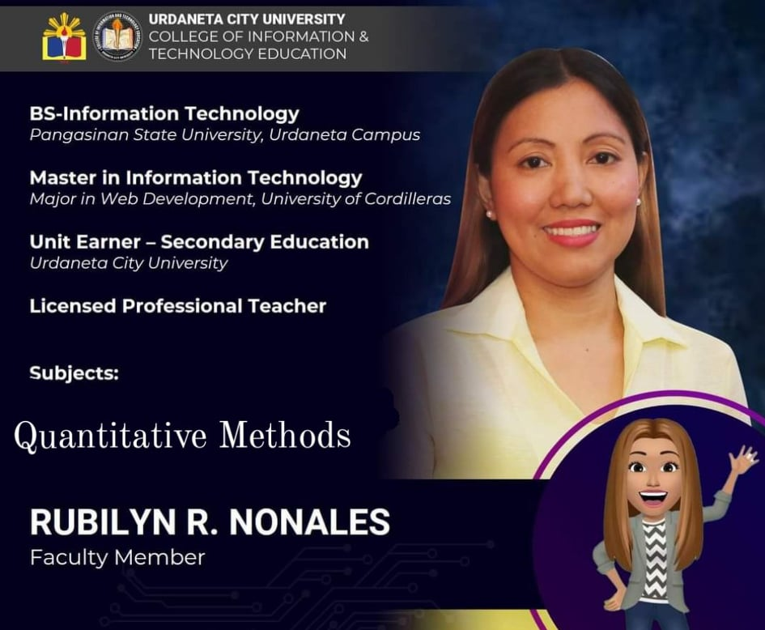
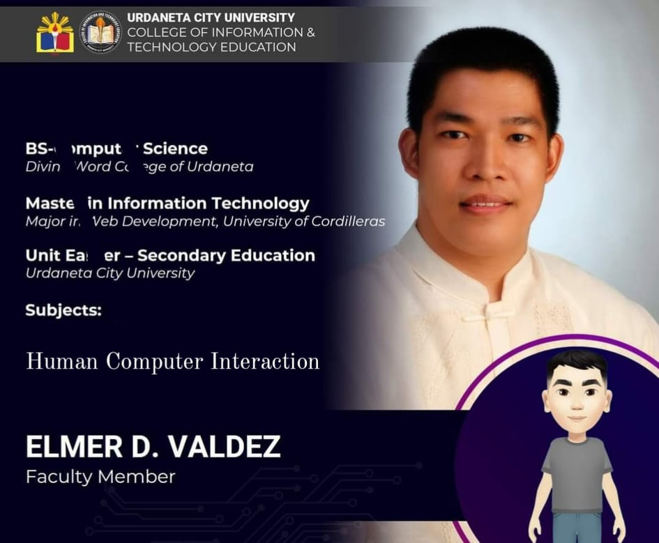

A University that performs, leads, and transcends, Urdaneta City University in its 54 years of legacy and expertise, is the ultimate academic choice for quality education that advocates global competence and prioritizes the honing of one’s character toward valuable success.
Founded by Dr. Pedro T. Orata in 1966, Urdaneta City University is unchanging in its mission to bring quality education for all Filipinos in various walks of life, with the aim to produce students bearing a noble spirit, anchored in the four core values of the University: Integrity, Competence, Teamwork, and Transcendence.
Experience learning that will give you a bright future, and be a UCUian! Here, we are one with you.
The Interworld Colleges Foundation, Inc is a private learning institution devoted exclusively to the service of knowledge, abilities, skills, and values. This school is owned and managed by Madame Eleanor Contreras Coliamco under the administration and supervision of her daughter Mrs. Mary Ann Coliamco Pabalan. ICF, Inc. is a non-sectarian school; however, one of its sound objectives which is to mold every learner into a God-loving individual remains foremost. Indeed, the college. respects every religious denomination. ICF is under the supervision and control of three (3) government agencies, namely: Commission on Higher Education (CHED), Technical Education Skills Development Authority (TESDA), and the Department of Education (DepEd).
This school was first named as Interworld College of Technology, Inc. (ICT) on April 16, 1991 with five (5) members of the Board of Trustees, namely: Eleanor C. Coliamco, President – Julio C. Coliamco, Vice President – Atty. Cherry C. Coliamco, Secretary – Mary Ann C. Pabalan, Treasurer and Aurora C. Domingo, Member. Initially, ICF was only a technical – vocational tertiary school with a meager number of students. In 1995, the name of the school was changed to Interworld Colleges Foundation, Inc. through legal process. Madame Eleanor C. Coliamco was designated as President by the Board of Trustees. She assumed the presidency of this educational institution on April 16, 1996.
URDANETA CITY UNIVERSITY
Bachelor of Science in Information Technology
2019-2021
INTERWORLD COLLEGES FOUNDATION INC.
Information and Communication Technologies
2013-2019